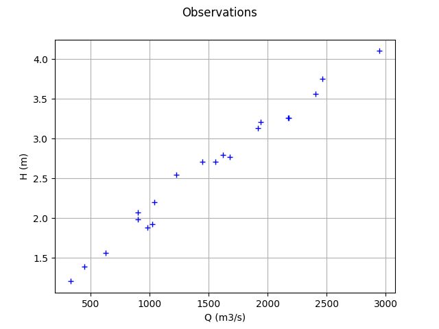
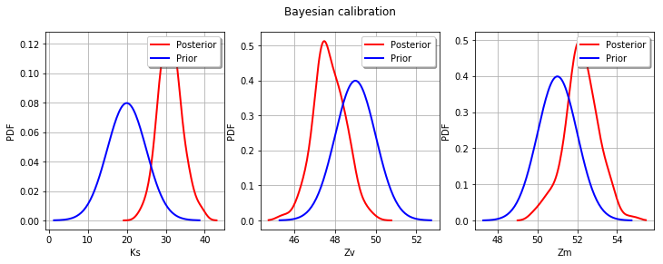

Bayesian calibration of the flooding model¶
Abstract¶
The goal of this example is to present the statistical hypotheses of the bayesian calibration of the flooding model.
Model¶
The simulator predicts the water height H depending on the flowrate Q.
We consider the following four variable:
Q : the river flowrate ()
Ks : the Strickler coefficient ()
Zv : the downstream riverbed level (m)
Zm : the upstream riverbed level (m)
When the Strickler coefficient increases, the riverbed generates less friction to the water flow.
Parameters¶
We consider the following parameters:
the length of the river L = 5000 (m),
the width of the river B = 300 (m).
Outputs¶
We make the hypothesis that the slope of the river is nonpositive and close to zero, which implies:
if . The height of the river is:
for any .
Distribution¶
We assume that the river flowrate has the following truncated Gumbel distribution:
Variable |
Distribution |
|---|---|
Q |
Gumbel(scale=558, mode=1013)>0 |
Parameters to calibrate¶
The vector of parameters to calibrate is:
The variables to calibrate are and are set to the following values:
Observations¶
In this section, we describe the statistical model associated with the  observations. The errors of the water heights are associated with a gaussian distribution with a zero mean and a standard variation equal to:
observations. The errors of the water heights are associated with a gaussian distribution with a zero mean and a standard variation equal to:
Therefore, the observed water heights are:
for where
and we make the hypothesis that the observation errors are independent. We consider a sample size equal to:
The observations are the couples , i.e. each observation is a couple made of the flowrate and the corresponding river height.
Analysis¶
In this model, the variables and are not identifiables, since only the difference matters. Hence, calibrating this model requires some regularization.
Generate the observations¶
[1]:
import numpy as np
import openturns as ot
We define the model  which has 4 inputs and one output H.
which has 4 inputs and one output H.
The nonlinear least squares does not take into account for bounds in the parameters. Therefore, we ensure that the output is computed whatever the inputs. The model fails into two situations:
if ,
if .
In these cases, we return an infinite number.
[2]:
def functionFlooding(X) :
L = 5.0e3
B = 300.0
Q, K_s, Z_v, Z_m = X
alpha = (Z_m - Z_v)/L
if alpha < 0.0 or K_s <= 0.0:
H = np.inf
else:
H = (Q/(K_s*B*np.sqrt(alpha)))**(3.0/5.0)
return [H]
[3]:
g = ot.PythonFunction(4, 1, functionFlooding)
g = ot.MemoizeFunction(g)
g.setOutputDescription(["H (m)"])
Create the input distribution for .
[4]:
Q = ot.Gumbel(558.0, 1013.0)
Q = ot.TruncatedDistribution(Q,ot.TruncatedDistribution.LOWER)
Q.setDescription(["Q (m3/s)"])
Q
[4]:
TruncatedDistribution(class=ParametrizedDistribution parameters=class=GumbelAB name=Unnamed a=1013 b=558 distribution=class=Gumbel name=Gumbel dimension=1 alpha=0.00179211 beta=1013, bounds = [0, (19000.8) +inf[)
Set the parameters to be calibrated.
[5]:
K_s = ot.Dirac(30.0)
Z_v = ot.Dirac(50.0)
Z_m = ot.Dirac(55.0)
K_s.setDescription(["Ks (m^(1/3)/s)"])
Z_v.setDescription(["Zv (m)"])
Z_m.setDescription(["Zm (m)"])
Create the joint input distribution.
[6]:
inputRandomVector = ot.ComposedDistribution([Q, K_s, Z_v, Z_m])
Create a Monte-Carlo sample of the output H.
[7]:
nbobs = 20
inputSample = inputRandomVector.getSample(nbobs)
outputH = g(inputSample)
Generate the observation noise and add it to the output of the model.
[8]:
sigmaObservationNoiseH = 0.1 # (m)
noiseH = ot.Normal(0.,sigmaObservationNoiseH)
ot.RandomGenerator.SetSeed(0)
sampleNoiseH = noiseH.getSample(nbobs)
Hobs = outputH + sampleNoiseH
Plot the Y observations versus the X observations.
[9]:
Qobs = inputSample[:,0]
[10]:
graph = ot.Graph("Observations","Q (m3/s)","H (m)",True)
cloud = ot.Cloud(Qobs,Hobs)
graph.add(cloud)
graph
[10]:

Setting the calibration parameters¶
Define the parametric model that associates each observation  and values of the parameters
and values of the parameters  to the parameters of the distribution of the corresponding observation: here
to the parameters of the distribution of the corresponding observation: here
[11]:
def fullModelPy(X):
Q, K_s, Z_v, Z_m = X
H = g(X)[0]
sigmaH = 0.5 # (m^2) The standard deviation of the observation error.
return [H,sigmaH]
fullModel = ot.PythonFunction(4, 2, fullModelPy)
model = ot.ParametricFunction(fullModel, [0], Qobs[0])
model
[11]:
ParametricEvaluation(class=PythonEvaluation name=OpenTURNSPythonFunction, parameters positions=[0], parameters=[x0 : 1443.6], input positions=[1,2,3])
Define the value of the reference values of the  parameter. In the bayesian framework, this is called the mean of the prior gaussian distribution. In the data assimilation framework, this is called the background.
parameter. In the bayesian framework, this is called the mean of the prior gaussian distribution. In the data assimilation framework, this is called the background.
[12]:
KsInitial = 20.
ZvInitial = 49.
ZmInitial = 51.
parameterPriorMean = ot.Point([KsInitial,ZvInitial,ZmInitial])
paramDim = parameterPriorMean.getDimension()
Define the covariance matrix of the parameters to calibrate.
[13]:
sigmaKs = 5.
sigmaZv = 1.
sigmaZm = 1.
[14]:
parameterPriorCovariance = ot.CovarianceMatrix(paramDim)
parameterPriorCovariance[0,0] = sigmaKs**2
parameterPriorCovariance[1,1] = sigmaZv**2
parameterPriorCovariance[2,2] = sigmaZm**2
parameterPriorCovariance
[14]:
[[ 25 0 0 ]
[ 0 1 0 ]
[ 0 0 1 ]]
Define the the prior distribution of the parameter
[15]:
prior = ot.Normal(parameterPriorMean,parameterPriorCovariance)
prior.setDescription(['Ks', 'Zv', 'Zm'])
prior
[15]:
Normal(mu = [20,49,51], sigma = [5,1,1], R = [[ 1 0 0 ]
[ 0 1 0 ]
[ 0 0 1 ]])
Define the distribution of observations conditional on model predictions.
Note that its parameter dimension is the one of  , so the model must be adjusted accordingly. In other words, the input argument of the
, so the model must be adjusted accordingly. In other words, the input argument of the setParameter method of the conditional distribution must be equal to the dimension of the output of the model. Hence, we do not have to set the actual parameters: only the type of distribution is used.
[16]:
conditional = ot.Normal()
conditional
[16]:
Normal(mu = 0, sigma = 1)
Proposal distribution: uniform.
[17]:
proposal = [ot.Uniform(-5., 5.),ot.Uniform(-1., 1.),ot.Uniform(-1., 1.)]
proposal
[17]:
[class=Uniform name=Uniform dimension=1 a=-5 b=5,
class=Uniform name=Uniform dimension=1 a=-1 b=1,
class=Uniform name=Uniform dimension=1 a=-1 b=1]
Test the MCMC sampler¶
The MCMC sampler essentially computes the log-likelihood of the parameters.
[18]:
mymcmc = ot.MCMC(prior, conditional, model, Qobs, Hobs, parameterPriorMean)
[19]:
mymcmc.computeLogLikelihood(parameterPriorMean)
[19]:
-150.5368575399012
Test the Metropolis-Hastings sampler¶
Creation of the Random Walk Metropolis-Hastings (RWMH) sampler.
[20]:
initialState = parameterPriorMean
[21]:
RWMHsampler = ot.RandomWalkMetropolisHastings(
prior, conditional, model, Qobs, Hobs, initialState, proposal)
Tuning of the RWMH algorithm.
Strategy of calibration for the random walk (trivial example: default).
[22]:
strategy = ot.CalibrationStrategyCollection(paramDim)
RWMHsampler.setCalibrationStrategyPerComponent(strategy)
Other parameters.
[23]:
RWMHsampler.setVerbose(True)
RWMHsampler.setThinning(1)
RWMHsampler.setBurnIn(200)
Generate a sample from the posterior distribution of the parameters theta.
[24]:
sampleSize = 1000
sample = RWMHsampler.getSample(sampleSize)
Look at the acceptance rate (basic checking of the efficiency of the tuning; value close to 0.2 usually recommended).
[25]:
RWMHsampler.getAcceptanceRate()
[25]:
[0.5175,0.608333,0.6025]
Build the distribution of the posterior by kernel smoothing.
[26]:
kernel = ot.KernelSmoothing()
posterior = kernel.build(sample)
Display prior vs posterior for each parameter.
[27]:
from openturns.viewer import View
import pylab as pl
fig = pl.figure(figsize=(12, 4))
for parameter_index in range(paramDim):
graph = posterior.getMarginal(parameter_index).drawPDF()
priorGraph = prior.getMarginal(parameter_index).drawPDF()
priorGraph.setColors(['blue'])
graph.add(priorGraph)
graph.setLegends(['Posterior', 'Prior'])
ax = fig.add_subplot(1, paramDim, parameter_index+1)
_ = ot.viewer.View(graph, figure=fig, axes=[ax])
_ = fig.suptitle("Bayesian calibration")
